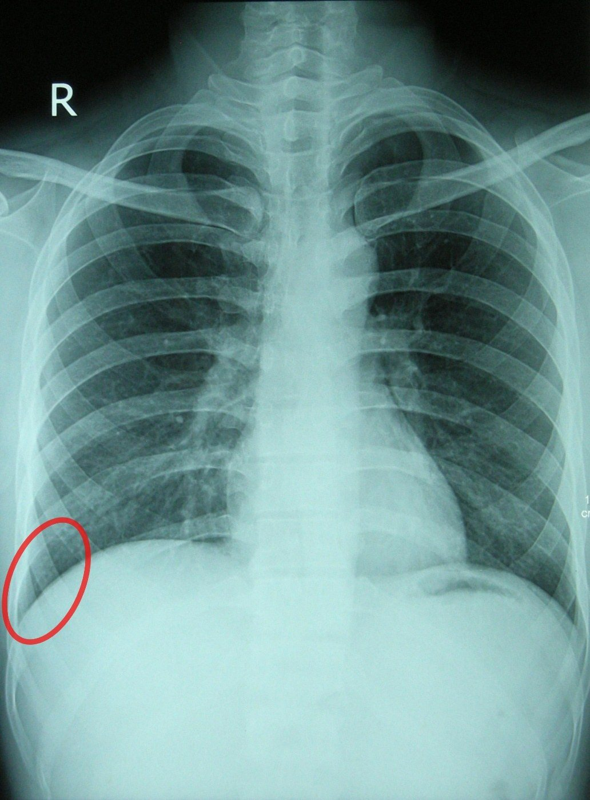

Bölüm 8 · Yüzey ve Radyolojik Anatomi
Önceki yedi bölüm göğsün yapılarını içeriden, kadavrada görüldüğü gibi anlattı. Hekim bu yapıları iki yerde kullanır: muayene masasında derinin altından bulmak zorundadır (yüzey anatomisi), grafide ve bilgisayarlı tomografide (BT) gölgelerinden tanımak zorundadır (radyolojik anatomi). Sunumda bu konudan yalnızca plevra ve akciğer sınırlarının izdüşümü vardı (Bölüm 4.6). Bu bölüm o temelin üzerine oryantasyon çizgilerini, elle bulunan kemik işaretlerini, lobların ve kalbin izdüşümünü, göğüs grafisinin ve BT'nin anatomisini ekler.
Göğüs duvarının altındaki bir yapının yerini tarif etmek için, bir haritada olduğu gibi iki koordinat gerekir. Dikey koordinat kaburga ya da interkostal aralık (İKA) numarasıdır: "sol 5. İKA". Yatay koordinat göğüs duvarı üzerine hayalî olarak çizilen dikey oryantasyon çizgileridir: "midklaviküler çizgide". İkisi birlikte bir noktayı tanımlar. Örneğin kalbin tepe vuruşu "sol 5. İKA'da, midklaviküler çizginin hemen içinde" bulunur. Yüzey anatomisi bu yüzden iki beceriye dayanır: kaburgaları doğru saymak ve çizgileri doğru yerleştirmek.
İki uyarı akılda tutulmalıdır. Birincisi, kitaplardaki düzeyler kadavra ya da sırtüstü yatan kişi içindir. Ayakta duran canlıda mediastinal organlar ve diyafram aşağı iner, derin inspirasyonda daha da iner (Bölüm 7.1). İkincisi, beden yapısına göre insanlar arasında birkaç santimetrelik farklar olağandır. Düzeyler bu yüzden yaklaşık değerler olarak öğrenilmelidir. Amaç milimetrik kesinlik değil, muayenede ve girişimde güvenli bir başlangıç noktasıdır.
Çizgiler göğüs duvarı üzerinde dikey olarak hayal edilir: önde dört, yanda üç, arkada üç (Şekil 8.1, Tablo 8.1). Hemen hepsi elle bulunabilen bir yapıdan geçer: sternum kenarı, klavikulanın orta noktası, koltuk altı plikaları, skapulanın alt açısı, dikenli çıkıntılar. Bu sayede çizgi her hastada aynı biçimde yeniden bulunabilir.
Önde. Linea mediana anterior sternumun ortasından geçen orta hattır. Linea sternalis sternumun yan kenarından, linea medioclavicularis (midklaviküler çizgi, MKÇ) klavikulanın orta noktasından iner. Linea parasternalis bu ikisinin ortasındadır. Erkekte meme başı MKÇ'nin hemen dışında, 4. İKA'dadır. Kadında ve yaşla yeri değiştiği için meme başı çizgi tanımında kullanılmaz.
Yanda. Koltuk altının ön ve arka sınırlarını iki kas plikası oluşturur: önde m. pectoralis major'un alt kenarı (ön aksiller pli), arkada m. latissimus dorsi ile m. teres major (arka aksiller pli). Linea axillaris anterior ön pliden, linea axillaris posterior arka pliden, linea axillaris media (orta aksiller çizgi, OAÇ) ikisinin ortasından, koltuk altının tepesinden iner. Kol yukarı kaldırılınca plikalar gerilir ve çizgiler daha kolay bulunur.
Arkada. Linea mediana posterior dikenli çıkıntılardan geçer. Linea paravertebralis transvers çıkıntıların uçlarına teğettir. Transvers çıkıntılar kas kitlesinin altında kaldığı için çizgi doğrudan hissedilmez; paravertebral kasların dış kenarı yaklaşık yerini verir. Linea scapularis kollar yandayken skapulanın alt açısından geçer.
| Çizgi | Nereden geçer? | Klinikte ne için kullanılır? |
|---|---|---|
| L. mediana anterior | Sternumun ortası | Simetri; sternotomi hattı |
| L. sternalis | Sternumun yan kenarı | Aort ve pulmoner odak sternum kenarında dinlenir (8.5) |
| L. parasternalis | Sternal çizgi ile MKÇ'nin ortası | A. thoracica interna sternum kenarının yaklaşık 1 cm dışında iner; bu bölgedeki girişimlerde hatırlanır |
| L. medioclavicularis | Klavikulanın orta noktası | Tepe vuruşu; akciğer alt sınırı 6. kaburga, plevra 8. kaburga; klasik iğne dekompresyonu yeri (2. İKA) |
| L. axillaris anterior | Ön aksiller pli (m. pectoralis major) | Göğüs tüpü güvenli üçgeninin ön sınırı |
| L. axillaris media | Koltuk altının tepesi | Akciğer alt sınırı 8., plevra 10. kaburga; erişkinde iğne dekompresyonu 4.-5. İKA'da bu çizginin önünden |
| L. axillaris posterior | Arka aksiller pli (m. latissimus dorsi, m. teres major) | Güvenli üçgenin arka sınırı; torasentez yeri |
| L. scapularis | Skapulanın alt açısı (kollar yanda) | Oturan hastada torasentez yeri |
| L. paravertebralis | Transvers çıkıntıların uçları | Akciğer alt sınırı 10., plevra 12. kaburga; paravertebral blok |
| L. mediana posterior | Dikenli çıkıntılar | Omur sayımı (C7'den başlayarak) |
Tablo 8.1 — Oryantasyon çizgileri. Akciğer ve plevra sınırları için Bölüm 4.6, güvenli üçgen ve iğne dekompresyonu için Bölüm 4.7, torasentezin anatomisi için Bölüm 3.5.
Kaburgaları saymak. Saymaya 1. kaburgadan başlanmaz, çünkü 1. kaburga klavikulanın arkasında saklıdır ve önde ancak kısmen hissedilir. Güvenilir başlangıç noktası angulus sternidir: incisura jugularis'in yaklaşık 5 cm altında, manubrium ile corpus sterni'nin birleştiği yerde parmakla hissedilen enine bir kabarıklık. Parmak bu kabarıklıktan yana kaydırılınca doğrudan 2. kaburga kıkırdağına gelir; hemen altındaki çukur 2. İKA'dır. Sayım buradan aşağı doğru sürdürülür. Sayımı sternum kenarında değil biraz daha yanda, MKÇ'ye yakın yapmak gerekir. Bunun nedeni alt kaburga kıkırdaklarının sternuma yaklaştıkça birbirine yaklaşması ve 7.-10. kıkırdakların arcus costalis'te birleşip tek tek ayırt edilemez hâle gelmesidir.
Arkada sayım dikenli çıkıntılarla yapılır. Boynun alt kısmında en belirgin dikenli çıkıntı genellikle C7'nindir (vertebra prominens); bazı kişilerde T1'inki daha belirgindir. Kollar yandayken skapulanın üst açısı T2, spina scapulae'nın iç ucu T3, alt açısı T7 dikenli çıkıntısı hizasındadır. 12. kaburga arkada hissedilebilir, ama çok kısa olabildiği için aşağıdan yukarı yapılan sayım yanıltıcıdır.
Dikenli çıkıntılar eğiktir. Torakal omurların dikenli çıkıntıları aşağı doğru eğik uzanır (Bölüm 1.4). Orta torakal bölgede (yaklaşık T5-T8) bir omurun dikenli çıkıntısının ucu, bir alttaki omurun gövdesi hizasındadır. Ciltte hissedilen bir dikenli çıkıntıdan omur gövdesinin ya da bir lezyonun düzeyi tahmin edilirken bu kayma hesaba katılmalıdır.
| Yüzey işareti | Vertebra düzeyi | İlişkili yapılar ve klinik kullanım |
|---|---|---|
| Vertebra prominens | C7 dikenli çıkıntısı | Arkada sayımın başlangıcı; akciğer tepesi arkada yaklaşık bu düzeyde (1. kaburganın boynu) |
| Incisura jugularis | T2-T3 diski | Trakea orta hatta parmakla hissedilir; hemen arkasında sol v. brachiocephalica (çocukta çentiğin üstüne taşabilir) |
| Angulus superior scapulae | T2 | Skapulanın üst sınırı |
| Spina scapulae'nın iç ucu | T3 | Oblik fissürün arkadaki başlangıcı (T2-T3) |
| Angulus sterni | T4-T5 diski | 2. kaburga kıkırdağı; üst ve alt mediasten sınırı, arcus aortae'nın başı ve sonu, karina, v. azygos'un VCS'ye açılması (Tablo 7.1) |
| Meme başı (erkek) | 4. İKA; T4 dermatomu | Sağ diyafram kubbesi derin ekspirasyonda önde yaklaşık bu hizaya kadar yükselir |
| Angulus inferior scapulae | T7 dikenli çıkıntısı | Linea scapularis; arkadan torasentez bu çizgide yapılabilir |
| Art. xiphisternalis | T8-T9 | Kalbin alt kenarı, karaciğerin üst yüzü ve centrum tendineum yaklaşık bu düzeyde |
| Arcus costalis'in en alt noktası (10. kıkırdak) | L3 (subkostal düzlem) | Göğüs kafesinin önde ve yanda en alt sınırı |
| 12. kaburga | T12 (arkada) | Plevranın arkadaki alt sınırı 12. kaburgayı çaprazlar (Bölüm 4.6) |
Tablo 8.2 — Elle bulunan işaretler ve yaklaşık vertebra düzeyleri (sırtüstü yatan erişkin için).
Diyafram kubbeleri ekspirasyonda önde 4.-5. İKA'ya kadar yükselir. Bu nedenle önde meme başı hizasının, arkada skapula alt açısının altından giren delici yaralanmalar yalnızca göğsü değil, diyaframı ve karın organlarını da (sağda karaciğer, solda dalak ve mide) yaralayabilir. Buna torakoabdominal yaralanma denir. Göğüs yarası gibi görünen bir yaralanmada karın da değerlendirilmelidir. Aynı nedenle torasentez ve göğüs tüpü girişlerinde çok aşağı inilmez; iğne ya da tüp diyaframın altına geçebilir.
Akciğer ve plevranın alt sınırları Bölüm 4.6'da anlatıldı: akciğer MKÇ'de 6., OAÇ'de 8., paravertebral çizgide 10. kaburgayı çaprazlar; plevra aynı çizgilerde iki kaburga aşağıda 8., 10. ve 12. kaburgayı çaprazlar (Şekil 4.7 ve 4.8). Burada üç tamamlayıcı bilgi eklenir: tepe, ön sınırlar ve fissürler.
Tepe neden klavikulanın üstündedir? Akciğer tepesi arkada 1. kaburganın boynu hizasındadır (yaklaşık C7 dikenli çıkıntısı düzeyi). 1. kaburga arkadan öne doğru belirgin biçimde aşağı eğimlidir; apertura thoracis superior bu yüzden öne-aşağı bakar (Bölüm 1.1). Arkada 1. kaburganın boynu düzeyindeki tepe, önden bakıldığında 1. kaburganın ön ucunun ve klavikulanın 2-3 cm üstünde kalır. Tepe aslında göğüs kafesinin dışına taşmaz; göğüs kafesinin üst açıklığı eğik olduğu için önden bakınca boynun içindeymiş gibi görünür. Klinik sonucu Bölüm 4.3'te anlatıldı: boyun kökündeki her iğne ve bıçak cupula pleurae'yi delebilir.
Ön sınırlar. İki plevra kesesinin ön kenarları sternoklaviküler eklemlerin arkasından başlar ve aşağı-içe uzanarak angulus sterni düzeyinde orta hatta birbirine yaklaşır. Sağ plevra orta hattın yakınında 6. kıkırdağa kadar iner. Sol plevra 4. kıkırdak düzeyinde yana çekilir; sol akciğerin ön kenarı ise daha belirgin biçimde yana çekilir (incisura cardiaca, Bölüm 4.5). Bu nedenle sternumun solunda, yaklaşık 4. ve 5. kıkırdakların hizasında, perikardın önünde akciğer dokusu bulunmayan küçük bir alan kalır; burada perikardı yalnızca plevranın kostomediastinal resesi örter. Bu alan perküsyonda mat ses verir (yüzeyel kalp matitesi). Amfizemde aşırı şişmiş akciğer bu alanı da doldurduğu için yüzeyel kalp matitesi küçülür ya da kaybolur.
Fissürler. Fissura obliqua arkada yaklaşık T2-T3 dikenli çıkıntısı hizasından başlar, göğsün yan yüzünü aşağı-öne doğru dolanır, OAÇ'yi yaklaşık 5. kaburga hizasında çaprazlar ve önde 6. kaburga kıkırdağında akciğerin alt kenarına ulaşır. Kol başın üstüne kaldırıldığında skapulanın iç kenarı bu fissürün seyrini kabaca izler. Fissura horizontalis yalnızca sağda vardır: OAÇ'de oblik fissürden ayrılır ve 4. kaburga ile 4. kıkırdak boyunca öne, sternum kenarına uzanır (Şekil 8.2).
Bu izdüşümün klinikteki en önemli sonucu, her lobun göğsün farklı bir yüzüne yansımasıdır (Tablo 8.3). Oblik fissür arkada yüksekten başlayıp önde alçağa indiği için alt loblar arkaya, üst loblar öne bakar. Arkadan dinlenen akciğer büyük ölçüde alt loblardır; üst loblar arkada yalnızca spina scapulae'ların üstündeki dar alanda dinlenebilir. Sağ orta lob yalnızca önde, 4. ve 6. kıkırdaklar arasında ve sağ koltuk altında yüzeye ulaşır, arkadan hiç dinlenemez. Sırtı dikkatle dinleyip göğsün önünü atlayan bir hekim orta lob ya da lingula pnömonisini kaçırabilir.
| Lob | Önden | Yandan | Arkadan |
|---|---|---|---|
| Sağ üst lob | 4. kaburga ve kıkırdağın üstü | Horizontal fissürün üstü (koltuk altının üst kısmı) | T3'ün üstündeki dar alan |
| Sağ orta lob | 4. ile 6. kıkırdaklar arası | Horizontal ve oblik fissürler arasındaki kama | Görülmez |
| Sağ alt lob | Yalnızca alt-dış köşede dar bir alan | Oblik fissürün altı ve arkası | T3'ten diyaframa kadar sırtın çoğu |
| Sol üst lob (lingula ile) | Ön yüzün neredeyse tamamı; lingula 4.-6. kıkırdaklar arasında, incisura cardiaca'nın altında | Oblik fissürün önü ve üstü | T3'ün üstündeki dar alan |
| Sol alt lob | Yalnızca alt-dış köşede dar bir alan | Oblik fissürün altı ve arkası | T3'ten diyaframa kadar sırtın çoğu |
Tablo 8.3 — Lobların göğüs duvarındaki alanları. Bir lobu dinlemek ya da perküte etmek için o lobun yüzeye ulaştığı alana gidilir.
Oskültasyonda ne nerede duyulur? Normal solunum sesinin niteliği altındaki hava yolunun büyüklüğüne bağlıdır. Trakeanın ve büyük bronşların içinde hava akımı türbülanlıdır ve yüksek, kaba bir ses üretir. Bu yüzden boyunda trakeanın üstünde ve manubriumun üstünde bronşiyal ses duyulur. Ana bronşların yüzeye en yakın olduğu yerlerde (önde 1. ve 2. İKA'da sternumun iki yanında, arkada iki skapula arasında, karina yaklaşık T4-T5 düzeyindedir) bronkoveziküler ses duyulur. Akciğerin geri kalanında ses küçük hava yollarından ve havalı alveollerden süzülerek gelir; yumuşak ve düşük perdeli veziküler sese dönüşür. Periferde bronşiyal ses duyulması, akciğer dokusunun sıvı ya da hücreyle dolduğunu (konsolidasyon) ve sesi artık iyi ilettiğini gösterir.
Patolojik seslerin yeri de anatomiyle açıklanır. Ayakta ya da oturan hastada akciğer kapillerlerindeki hidrostatik basınç tabanlarda en yüksektir (Bölüm 4.4). Sol kalp yetersizliğinde kapillerlerden sızan sıvı bu yüzden önce tabanlarda birikir ve inspiratuvar raller ilk olarak sırtın alt kısmında, alt lobların üstünde duyulur (2020-2021 S20: "akciğer bazallerinde yaş raller", sağ değil sol kalp yetersizliğinin bulgusu olarak sorulmuştu). Büyük hava yollarındaki sekresyonun ürettiği ronküs ise en belirgin olarak büyük bronşların üzerinde duyulur ve öksürükle değişebilir (2025-2026 S4 ve 2024 S36: KOAH'ta lümendeki değişikliğin oskültasyondaki karşılığı ronküs; Kitap 1, Bölüm 2).
Kalbin ön göğüs duvarına izdüşümü dört noktayı birleştiren bir dörtgen olarak çizilir (Şekil 8.3):
Bu dörtgenin kenarlarını farklı boşluklar oluşturur ve bu bilgi göğüs grafisindeki kalp gölgesini anlamanın da anahtarıdır. Sağ kenar 3. ve 6. kıkırdaklar arasında sağa hafif dışbükey bir çizgidir ve neredeyse tamamen sağ atriyumdan oluşur. Alt kenar diyaframın centrum tendineum'u üzerinde yatar ve büyük ölçüde sağ ventriküldür; yalnızca apekse yakın küçük bir kısmı sol ventriküldür. Sol kenar büyük ölçüde sol ventrikülden, en üstte sol aurikuladan oluşur. Üst kenar büyük damarların köklerine karşılık gelir.
Kalbin ön (sternokostal) yüzünün çoğunu sağ ventrikül oluşturur. Kalp, sağ boşluklarını öne, sol atriyumunu arkaya getirecek biçimde kendi ekseni etrafında dönmüştür. Bu dönüşün iki pratik sonucu vardır. Sternumun solundan giren bir bıçak en sık sağ ventrikülü yaralar. Sol atriyum ise kalbin en arkadaki boşluğudur ve doğrudan özofagusun önündedir (Bölüm 7.5; BT'deki görünümü 8.7'de).
Tepe vuruşu. Sistolde kalp hafifçe döner ve apeks göğüs duvarına çarpar. Bu vuruş normalde sol 5. İKA'da, MKÇ'nin hemen içinde, bir parmak ucu genişliğinde hissedilir. Sol ventrikül genişlediğinde vuruş aşağı ve dışa (6. İKA'ya, ön aksiller çizgiye doğru) kayar ve yayılır. Mediastinal kaymada (Bölüm 7.1) kayma yönünde yer değiştirir. Amfizemde aşırı şişmiş akciğer kalbin önüne girdiği için hissedilemeyebilir.
Kapakların gerçek yeri ile en iyi duyulduğu yer neden farklıdır? Dört kapak sternumun arkasında, 3. ve 4. kıkırdaklar hizasında, birbirine çok yakın olarak dizilmiştir (Tablo 8.4). Kapağın tam üstünü dinlemek kapakları birbirinden ayırmaz; üstelik sternum sesi iyi iletmez. Kapak sesleri ve üfürümler, kanın akış yönünde, kapağın açıldığı boşluğun ya da damarın göğüs duvarına en çok yaklaştığı yerde en iyi duyulur. Oskültasyon odakları bu yüzden kapakların "akış aşağısındadır":
| Kapak | Gerçek yeri (sternum arkası) | Oskültasyon odağı |
|---|---|---|
| Pulmoner | Sol 3. kaburga kıkırdağının sternal ucu | Sol 2. İKA, sternum kenarı |
| Aort | Sternumun sol yarısı, 3. İKA hizası | Sağ 2. İKA, sternum kenarı |
| Mitral | Sternumun sol yarısı, 4. kıkırdak hizası | Apeks: sol 5. İKA, MKÇ'nin hemen içi |
| Triküspit | Sternumun sağ yarısı, 4. İKA hizası | Sternumun sol alt kenarı, 4.-5. İKA |
Tablo 8.4 — Kapakların anatomik yeri ve oskültasyon odakları. Kapaklar yukarıdan aşağıya pulmoner, aort, mitral, triküspit sırasıyla, sol 3. kıkırdaktan sağ 6. kıkırdağa uzanan eğik bir hat üzerindedir.
Standart göğüs grafisi hasta ayakta dururken ve derin nefes alıp tutarken çekilir. X ışını tüpü hastanın arkasında yaklaşık 1,8 m uzaklıktadır, dedektör göğsün önüne dayanır. Işın arkadan öne geçtiği için bu çekime arka-ön (posteroanterior, PA) grafi denir. Bu düzenin üç nedeni vardır:
Yatağa bağımlı hastada grafi yatakta, sırtüstü ve AP olarak çekilir. Bu grafide kalp ve mediastinum büyük görünür. Plevral sıvı sinüse inmek yerine arka göğüs duvarı boyunca yayılır ve hemitoraksı silik bir gri tonla örter. Pnömotoraks havası tepede değil, en yüksek nokta olan önde ve aşağıda (ön kostofrenik bölgede) toplanır. AP grafiyi PA grafi gibi okumak bu yüzden yanıltır.
Grafi aynı zamanda radyasyon dozu en düşük yöntemdir (Şekil 8.4). Tek bir PA grafinin dozu, doğal çevre radyasyonundan birkaç günde alınan doza eşittir. Standart bir toraks BT ise yüzlerce PA grafiye eşdeğer doz verir. Göğüs hastalıklarında ilk görüntüleme yönteminin grafi olmasının ve BT'nin gerektiği durumlara saklanmasının nedenlerinden biri budur.
X ışını dokudan geçerken dokunun yoğunluğu ve atom numarasıyla orantılı olarak zayıflar. Az zayıflayan ışın dedektöre daha çok ulaşır ve görüntüde koyu çıkar. Grafide beş temel yoğunluk ayırt edilir. En koyudan en açığa: hava (akciğer, trakea, mide gazı), yağ (deri altı, mediastinal yağ), yumuşak doku ve su (kalp, kan, kas, sıvı), kalsiyum ve kemik (kaburgalar, omurlar, kalsifikasyonlar) ve metal (kateter, protez). Kalbin duvarı ile içindeki kan aynı yoğunluktadır; grafide kalbin boşlukları bu yüzden ayırt edilemez, yalnızca kalbin dış kenarı görülür.
Grafinin bütün anatomisi tek bir ilkeye dayanır: bir yapının kenarı ancak farklı yoğunlukta bir dokuya komşu olduğunda görülür. Kalbin kenarı görülür, çünkü su yoğunluğundaki kalp havalı akciğere komşudur. Diyaframın üst yüzü görülür, çünkü üstünde hava vardır; alt yüzü görülmez, çünkü altındaki karaciğerle aynı yoğunluktadır. Bu ilke aşağıda anlatılan silüet işaretinin temelidir.
Grafi her seferinde aynı sırayla okunur. Aşağıdaki sıra hem bir kontrol listesi hem de bir anatomi özetidir (Şekil 8.5 ve 8.6).

Trakea ve ana bronşlar. Trakea orta hatta koyu bir hava sütunu olarak iner. Arcus aortae düzeyinde hafifçe sağa itilmiş görünmesi normaldir. Karina yaklaşık T4-T5 düzeyindedir (ayakta biraz daha aşağıda). Sağ ana bronş daha dik ve kısa, sol ana bronş daha yatay ve uzundur (Bölüm 5.4). Trakeanın bir yana kayması mediastinal kaymanın (Bölüm 7.1) en kolay görülen bulgusudur. Karinanın açısı (normalde yaklaşık 60-75°) altındaki subkarinal lenf düğümleri ya da sol atriyum büyüdüğünde genişler, çünkü iki ana bronş alttan yukarı ve yana itilir.
Mediastinal konturlar. Mediastinum grafide iki akciğer arasındaki beyaz şerittir. Sağ ve sol kenarlarını belirli yapılar oluşturur (Tablo 8.5). Sağda yukarıdan aşağıya: sağ v. brachiocephalica ve VCS düz bir çizgi yapar, altında sağ atriyumun dışbükey kenarı gelir. Solda yukarıdan aşağıya dört kavis sayılır: arcus aortae'nın oluşturduğu aort topuzu, altında içbükey aortopulmoner (AP) pencere, truncus pulmonalisin küçük kavisi, normalde düz olan sol aurikula ve en büyük kavis olan sol ventrikül. Bir boşluk ya da damar büyüdüğünde kendi segmenti dışa doğru kabarır. Örneğin mitral darlığında sol atriyum büyür ve normalde düz olan sol aurikula segmenti dışbükey hâle gelir; pulmoner hipertansiyonda truncus pulmonalis kavisi belirginleşir.
| Sağ kenar (yukarıdan aşağıya) | Sol kenar (yukarıdan aşağıya) |
|---|---|
| Sağ v. brachiocephalica, VCS (düz çizgi) | A. subclavia sinistra (silik) |
| Sağ atriyum (dışbükey) | Aort topuzu (arcus aortae) |
| VCİ (kardiyofrenik açıda, küçük) | Aortopulmoner pencere (içbükey) |
| Truncus pulmonalis | |
| Sol aurikula (normalde düz) | |
| Sol ventrikül (en büyük kavis, apekse kadar) |
Tablo 8.5 — PA grafide mediastinum ve kalp gölgesinin kenarlarını oluşturan yapılar. Sağ ventrikül ve sol atriyum PA grafide normalde kenar oluşturmaz; sağ ventrikül önde, sol atriyum arkada kalır. İkisi yan grafide görülür.
Hiluslar. Hilus gölgesini büyük ölçüde pulmoner arterler ve üst lob venleri oluşturur. Bronşlar havayla dolu oldukları için gölge vermez, normal lenf düğümleri de seçilmez. Sol hilus sağdan 1-2 cm yukarıdadır (normal kişilerin yaklaşık %97'sinde). İkisinin aynı düzeyde olması seyrektir; sol hilusun sağdan aşağıda olması normal değildir ve bir lobda hacim kaybını düşündürür. Nedeni Bölüm 5.2'deki hilus anatomisidir: sol a. pulmonalis sol ana bronşun üstünden aşarak geçer ve sol hilusun en üst yapısıdır; sağ a. pulmonalis ise sağ üst lob bronşunun altında, ara bronşun önünde kalır.
Akciğer alanları. Akciğerde görülen dallanan beyaz çizgiler damarlardır; normal bronş duvarları çoğunlukla görülmez. Damarlar hilustan perifere doğru incelir ve dış üçte birlik alanda neredeyse görünmez olur. Ayakta duran insanda yerçekimi nedeniyle alt zon damarları üst zonlardakinden kalındır. Akciğer venöz basıncı yükseldiğinde (sol kalp yetersizliği, mitral darlık) bu oran tersine döner ve üst zon damarları genişler; buna sefalizasyon denir. Fissürler ince beyaz çizgiler olarak ancak ışına paralel uzanan kısımlarında görülür. PA grafide en sık sağ horizontal fissür seçilir.
Diyafram ve sinüsler. Sağ kubbe çoğu insanda solundan yaklaşık 1,5-2,5 cm yüksektir: altında karaciğer vardır, sol kubbenin üstünde ise kalp oturur. Sol kubbenin altında mide fundusundaki hava (mide gazı) görülür. Kubbelerin göğüs duvarıyla yaptığı kostofrenik açılar keskin olmalıdır. Künt açı en sık plevral sıvıyı gösterir (Bölüm 4.5, Şekil 4.5 ve 4.6). Kalbin diyaframla yaptığı açılar kardiyofrenik açılardır.
Kemikler ve yumuşak dokular. Arka kaburgalar omurgadan yana doğru hemen hemen yatay uzanır ve daha belirgindir. Ön kaburgalar yandan içe doğru aşağı eğimlidir; kıkırdakları kalsifiye değilse görülmez. Klavikulalar, skapulalar ve omurlar da değerlendirilir. Meme gölgeleri alt zonları daha açık (beyaz) gösterebilir; meme başı gölgesi akciğer nodülü sanılabilir.
Kardiyotorasik oran (KTO). Kalbin en geniş yatay çapı göğüs kafesinin en geniş iç çapına bölünür (Şekil 8.6). Kalbin çapı, orta hattan sağ kenara en uzak mesafe (a) ile sol kenara en uzak mesafenin (b) toplamıdır. PA grafide 0,5'in altı normal kabul edilir. AP ve yatarak çekilen grafide kalp büyütülerek göründüğü için bu ölçüt kullanılmaz.
Akciğerin bir bölümü havasını kaybedip sıvı, irin ya da hücreyle dolduğunda (pnömoni, atelektazi, tümör) su yoğunluğuna geçer. Bu bölüm kalbe, aortaya ya da diyaframa komşuysa iki su yoğunluğu yan yana gelir ve aradaki kenar grafide kaybolur. Buna silüet işareti denir. İşaretin değeri, tek bir PA grafiden konsolidasyonun hangi loba ait olduğunu söyletmesidir. Her mediastinal ve diyafragmatik kenar belli bir lobla temas eder; kaybolan kenar o lobu gösterir. Mekanizma adım adım şöyledir (Şekil 8.7):
PA grafide sağ alt zonda bir opasite gören hekim yalnızca bu iki kenara bakarak lezyonun önde (orta lob) mi, arkada (alt lob) mı olduğunu söyleyebilir. Tablo 8.6 aynı mantığı bütün kenarlara uygular.
| Silinen kenar | Komşu lob ya da segment |
|---|---|
| Sağ kalp kenarı | Sağ orta lob (medial segment) |
| Sol kalp kenarı | Lingula (sol üst lob) |
| Sağ hemidiyafram | Sağ alt lob (bazal segmentler) |
| Sol hemidiyafram | Sol alt lob (bazal segmentler) |
| Aort topuzu | Sol üst lob (apikoposterior segment) |
| Sağ üst mediastinal kenar (VCS, aorta ascendens) | Sağ üst lob (anterior segment) |
| Aorta descendens'in kenarı | Sol alt lob (superior ve posterior bazal segment) |
Tablo 8.6 — Silüet işaretiyle lob tayini. Kenar korunuyorsa lezyon o yapıya komşu değildir: önünde ya da arkasındadır.
Hava bronkogramı aynı ilkenin tersidir. Normalde bronşlar görülmez, çünkü içindeki hava etrafındaki havalı alveollerden ayırt edilemez. Alveoller sıvıyla dolup bronşlar açık kaldığında, hava dolu bronşlar çevrelerindeki su yoğunluğu içinde koyu dallanan çizgiler olarak belirir. Hava bronkogramı lezyonun akciğer parankiminin içinde olduğunu ve onu besleyen bronşun açık olduğunu gösterir; pnömonide tipiktir. Bronşu tıkayan bir tümörün yaptığı atelektazide bronşun içi de havasız kaldığı için genellikle görülmez.
PA grafide üst üste binen yapılar yan grafide önden arkaya ayrılır (Şekil 8.8). Yan grafi özellikle PA grafide kalbin, diyaframın ya da hilusun arkasında saklanan lezyonları gösterir. Okunurken üç alan ve iki kural akılda tutulur:
BT göğsü ince enine (aksiyel) kesitlere ayırarak üst üste binmeyi ortadan kaldırır. Kesitler hastanın ayak tarafından bakılıyormuş gibi gösterilir: hastanın sağı görüntünün solunda, önü görüntünün üstündedir. Bu düzen, karşımızda duran hastaya baktığımızda gördüğümüzle aynıdır ve PA grafiyle de uyumludur.
Hounsfield birimi ve pencereler. BT, her küçük hacim öğesinin ışını ne kadar zayıflattığını bir sayıya çevirir. Bu sayı suyu 0, havayı −1000 kabul eden Hounsfield birimiyle (HU) ifade edilir. Yağ yaklaşık −100, kas ve kan yaklaşık +40, kemik +400 ile +1000 arasıdır; akciğer parankimi içindeki hava nedeniyle yaklaşık −850'dir. Bu yaklaşık 2000 HU'luk aralık ekranda tek seferde anlamlı biçimde gösterilemez, çünkü göz aynı anda ancak birkaç düzine gri tonu ayırt edebilir. Görüntü bu yüzden bir "pencereden" izlenir. Pencerenin merkezi (seviye, S) ve genişliği (G) seçilir: bu aralığın altındaki her değer siyah, üstündeki her değer beyaz görünür, aralığın içindeki değerler gri tonlara yayılır (Şekil 8.9). Akciğer penceresi (S yaklaşık −600, G 1500) havalı parankimin ayrıntısını gösterir, ama yumuşak dokuları birbirinden ayırmaz. Mediasten penceresi (S yaklaşık +40, G 400) kalbi, damarları, lenf düğümlerini ve yağı ayırır, ama akciğeri düz siyah gösterir. Aynı kesit bu yüzden her zaman iki pencerede incelenir.
Kesitler yukarıdan aşağıya. Mediastinum BT'de birkaç tipik düzeyden geçen kesitlerle okunur (Tablo 8.7). En çok bilgi veren kesit truncus pulmonalis'in ikiye ayrıldığı düzeydir (Şekil 8.10). Bu kesitte önceki bölümlerde anlatılan ilişkilerin hepsi bir arada görülür. Aorta ascendens önde ve sağdadır, VCS onun sağındadır. Truncus pulmonalis solda ve öndedir. Sağ a. pulmonalis aorta ascendens ile VCS'nin arkasından, sağ ana bronşun önünden sağ hilusa gider (Bölüm 5.2). Sol a. pulmonalis sol ana bronşun üstünden ve yanından aşarak arkaya döner. Özofagus iki bronşun arkasında, hafifçe soldadır. Aorta descendens omurganın sol önünde, v. azygos sağ önündedir.
| Kesit düzeyi | Görülen anahtar yapılar ve ilişkiler |
|---|---|
| Apertura thoracis superior (T1-T2) | Trakea orta hatta, özofagus arkasında; iki yanda vv. brachiocephalicae; arcus aortae'nın üç dalı sağ önden sol arkaya doğru dizilir: truncus brachiocephalicus, a. carotis communis sinistra, a. subclavia sinistra; akciğer tepeleri |
| Arcus aortae (T3-T4) | Arcus aortae sağ önden sol arkaya uzanan eğik bir tüp olarak görülür; trakea onun sağında, özofagus trakeanın arkasında hafifçe solda; VCS sağ önde; kemerin önünde timus kalıntısı ve yağ (prevasküler alan) |
| Aortopulmoner pencere ve azygos kemeri (T4-T5) | Arcus aortae ile sol a. pulmonalis arasında yağ, lenf düğümleri, sol n. laryngeus recurrens ve lig. arteriosum; v. azygos sağ ana bronşun üstünden aşarak VCS'nin arkasına açılır; hemen altında karina |
| Truncus pulmonalis bifurkasyonu (T5-T6) | Şekil 8.10: aorta ascendens ve VCS önde-sağda, sağ a. pulmonalis bunların arkasından geçer; sol a. pulmonalis sol ana bronşun üstünden aşar; aorta descendens omurganın sol önünde |
| Dört boşluk düzeyi (T7-T8) | Sağ ventrikül en önde, sternumun arkasında; sol atriyum en arkada, özofagus ve aorta descendens'in hemen önünde; sol ventrikül sol arkada, sağ atriyum sağda; vv. pulmonales inferiores sol atriyuma açılır |
| Diyafram düzeyi (T9-T11) | VCİ karaciğerden çıkıp sağ atriyuma girer; özofagus hiatusta; diyafram krusları aortayı önden sarar; krusların arkasında (retrokrural alan) aorta, v. azygos, v. hemiazygos ve ductus thoracicus |
Tablo 8.7 — Toraks BT'sinde anahtar kesit düzeyleri (yaklaşık vertebra düzeyleri sırtüstü yatan erişkin içindir).
Dört boşluk kesitinde iki ilişki özellikle önemlidir. Sağ ventrikül en öndedir ve doğrudan sternumun arkasındadır; sternumun yakınındaki delici yaralanmaların neden en sık sağ ventrikülü tuttuğu buradan da görülür. Sol atriyum en arkadadır ve özofagusla aorta descendens'in hemen önündedir. Büyümüş bir sol atriyum bu yüzden özofagusa bası yapar (Bölüm 7.5) ve karinanın açısını genişletir. Transözofageal ekokardiyografi de sol atriyumu ve mitral kapağı bu komşuluk sayesinde en yakından görür.
Doğru: B. Angulus sterni manubrium ile corpus sterni'nin birleştiği yerde parmakla kolayca hissedilen enine bir kabarıklıktır. Bu kabarıklığın hemen yanında 2. kaburga kıkırdağı sternuma bağlanır. Sayım 2. kaburgadan başlar ve aşağı doğru sürdürülür.
A yanlış: klavikulanın orta noktası dikey bir çizginin (MKÇ) başlangıcıdır, kaburga düzeyi vermez. C yanlış: meme başının yeri kadında ve yaşla değişir. D yanlış: xiphoid çıkıntının çevresinde alt kıkırdaklar arcus costalis'te birleşir ve tek tek sayılamaz. E yanlış: 1. kaburga klavikulanın arkasında saklıdır ve güvenle hissedilemez.
Doğru: C. Orta lob horizontal fissürün (4. kaburga ve kıkırdak) altında, oblik fissürün (önde 6. kıkırdağa iner) önünde kalan kama biçimli loptur. Yüzeye yalnızca önde 4. ile 6. kıkırdaklar arasında ve sağ yan duvarda ulaşır.
A, B ve E yanlış: oblik fissür arkada T3 düzeyinden başladığı için sırtın büyük kısmı alt loba aittir; orta lob arkadan hiç dinlenemez. İki skapula arasında ayrıca ana bronşların bronkoveziküler sesi duyulur. D yanlış: supraklaviküler çukurda akciğer tepesi, yani üst lob dinlenir.
Doğru: D. Aort kapağı sternumun sol yarısının arkasında, 3. İKA hizasındadır. Ama kapaktan çıkan kan aorta ascendens içinde yukarı ve sağa akar; aorta ascendens sağ 2. İKA'da göğüs duvarına en çok yaklaşır. Üfürüm bu yüzden sağ 2. İKA'da en iyi duyulur ve akım yönünde karotislere yayılır.
A yanlış: sol 2. İKA pulmoner odaktır. B yanlış: apeks mitral odaktır. C yanlış: sternumun sol alt kenarı triküspit odağıdır. E yanlış: sternumun sağ yarısının arkasında 4. İKA hizasında bulunan kapak triküspit kapaktır.
Doğru: A. Sol kenarda yukarıdan aşağıya arcus aortae'nın oluşturduğu aort topuzu, altında aortopulmoner pencere, truncus pulmonalis, normalde düz olan sol aurikula ve en büyük kavis olan sol ventrikül bulunur.
B yanlış: VCS ve sağ atriyum sağ kenarı oluşturur; sağ ventrikül PA grafide kenar oluşturmaz. C yanlış: sıra karıştırılmıştır; aort topuzu en üsttedir, sol aurikula sol ventrikülün üstündedir. D yanlış: sol atriyumun gövdesi ve sağ ventrikül PA grafide kenar oluşturmaz (sol atriyum arkada, sağ ventrikül öndedir). E yanlış: sağ ventrikül sol kenarda yer almaz.
Doğru: E. Bir yapının kenarı ancak farklı yoğunlukta bir dokuya komşuyken görülür. Diyaframın kenarının silinmesi, ona komşu olan alt lobun bazal segmentlerinin su yoğunluğuna geçtiğini gösterir. Sağ kalp kenarının korunması ise kalbe komşu olan orta lobun havalı olduğunu, yani konsolidasyonun kalbin arkasında olduğunu gösterir.
A yanlış: orta lob dolsaydı sağ kalp kenarı silinirdi. B yanlış: anterior segment konsolidasyonu sağ üst mediastinal kenarı siler ve üst zondadır. C yanlış: lingula sol kalp kenarını siler. D yanlış: ön mediastinal kitle diyafram kenarını silmez; yan grafide retrosternal boşluğu doldurur.
Doğru: B. Retrosternal boşluk sternum ile aorta ascendens ve sağ ventrikül arasındaki havalı alandır ve ön mediastinumun yan grafideki karşılığıdır. Timoma, lenfoma ve teratom gibi ön mediastinal kitleler bu alanı doldurur.
A ve D yanlış: bunlar retrokardiyak boşlukta, kalbin arkasında görülür. C yanlış: sıvı arka kostofrenik sinüsü siler. E yanlış: nörojenik tümörler arka mediastende, omurganın yanındadır.
Doğru: C. X ışını tüpün odağından yelpaze gibi yayıldığı için dedektörden uzak cisimlerin gölgesi büyür. AP çekimde kalp dedektörden uzak kalır ve büyük görünür; KTO bu yüzden yalnızca PA grafide güvenle değerlendirilir.
A doğru: sol a. pulmonalis sol ana bronşun üstünden aştığı için sol hilus daha yüksektedir. B doğru: sağ kubbenin altında karaciğer, sol kubbenin üstünde kalp vardır. D doğru: bu, yeterli inspirasyonun ölçütüdür. E doğru: rotasyon değerlendirmesi böyle yapılır.
Doğru: D. Truncus pulmonalis solda ve öndedir. Sağ a. pulmonalis sağ hilusa ulaşmak için orta hattı geçmek zorundadır ve bunu aorta ascendens ile VCS'nin arkasından, sağ ana bronşun önünden yapar (Bölüm 5.2: sağ hilusta arter bronşun önündedir).
A yanlış: önde aorta ascendens ve VCS vardır; arter onların arkasından geçer. B, C ve E yanlış: bronşun, özofagusun ve aorta descendens'in arkası arka mediastene aittir; pulmoner arter bu düzlemlere girmez.
Doğru: A. Mediasten penceresi yaklaşık −160 ile +240 HU arasını gri tonlara yayar; bu aralığın altındaki her değer siyah görünür. Akciğer parankimi yaklaşık −850 HU olduğu için tümüyle siyah çıkar. Parankimi görmek için akciğer penceresi (S yaklaşık −600, G 1500) kullanılır.
B yanlış: hava ışını en az zayıflatan dokudur; bu yüzden negatif HU değeri alır. C yanlış: pencere kontrast maddeden bağımsız olarak bir HU aralığı seçer. D yanlış: sıfır suyun değeridir. E yanlış: üst sınırın üstündeki değerler beyaz görünür.
Doğru: E. Diyafram kubbeleri ekspirasyonda önde 4.-5. İKA'ya kadar yükselir. Meme başı hizasının altından giren bir bıçak plevra boşluğunu geçerek diyaframı ve onun altındaki karaciğeri de yaralayabilir (torakoabdominal yaralanma).
A yanlış: karın organları gözden kaçabilir. B yanlış: sağ 5. İKA'nın orta-dış kısmı kalbin izdüşümünün dışındadır (kalbin sağ kenarı sternumun ancak 1-2 cm sağına uzanır). C yanlış: bıçak göğüs duvarını geçebilir. D yanlış: plevra MKÇ'de 8. kaburgaya kadar iner; 5. İKA plevranın içindedir.